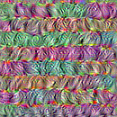
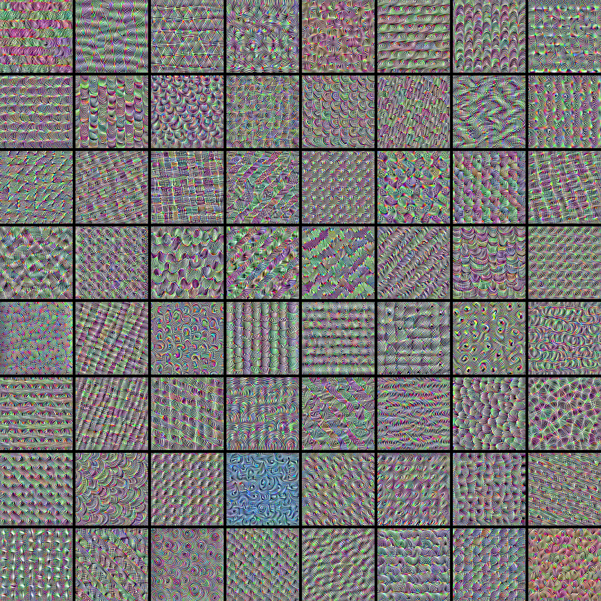

Visualizing what convnets learn
Author: fchollet
Date created: 2020/05/29
Last modified: 2020/05/29
Description: Displaying the visual patterns that convnet filters respond to.

Introduction
In this example, we look into what sort of visual patterns image classification models
learn. We'll be using the ResNet50V2 model, trained on the ImageNet dataset.
Our process is simple: we will create input images that maximize the activation of
specific filters in a target layer (picked somewhere in the middle of the model: layer
conv3_block4_out). Such images represent a visualization of the
pattern that the filter responds to.
Setup
import os
os.environ["KERAS_BACKEND"] = "tensorflow"
import keras
import numpy as np
import tensorflow as tf
# The dimensions of our input image
img_width = 180
img_height = 180
# Our target layer: we will visualize the filters from this layer.
# See `model.summary()` for list of layer names, if you want to change this.
layer_name = "conv3_block4_out"
Build a feature extraction model
# Build a ResNet50V2 model loaded with pre-trained ImageNet weights
model = keras.applications.ResNet50V2(weights="imagenet", include_top=False)
# Set up a model that returns the activation values for our target layer
layer = model.get_layer(name=layer_name)
feature_extractor = keras.Model(inputs=model.inputs, outputs=layer.output)
Set up the gradient ascent process
The "loss" we will maximize is simply the mean of the activation of a specific filter in our target layer. To avoid border effects, we exclude border pixels.
def compute_loss(input_image, filter_index):
activation = feature_extractor(input_image)
# We avoid border artifacts by only involving non-border pixels in the loss.
filter_activation = activation[:, 2:-2, 2:-2, filter_index]
return tf.reduce_mean(filter_activation)
Our gradient ascent function simply computes the gradients of the loss above with regard to the input image, and update the update image so as to move it towards a state that will activate the target filter more strongly.
@tf.function
def gradient_ascent_step(img, filter_index, learning_rate):
with tf.GradientTape() as tape:
tape.watch(img)
loss = compute_loss(img, filter_index)
# Compute gradients.
grads = tape.gradient(loss, img)
# Normalize gradients.
grads = tf.math.l2_normalize(grads)
img += learning_rate * grads
return loss, img
Set up the end-to-end filter visualization loop
Our process is as follow:
- Start from a random image that is close to "all gray" (i.e. visually netural)
- Repeatedly apply the gradient ascent step function defined above
- Convert the resulting input image back to a displayable form, by normalizing it, center-cropping it, and restricting it to the [0, 255] range.
def initialize_image():
# We start from a gray image with some random noise
img = tf.random.uniform((1, img_height, img_width, 3))
# ResNet50V2 expects inputs in the range [-1, +1].
# Here we scale our random inputs to [-0.125, +0.125]
return (img - 0.5) * 0.25
def visualize_filter(filter_index):
# We run gradient ascent for 20 steps
iterations = 30
learning_rate = 10.0
img = initialize_image()
for iteration in range(iterations):
loss, img = gradient_ascent_step(img, filter_index, learning_rate)
# Decode the resulting input image
img = deprocess_image(img[0].numpy())
return loss, img
def deprocess_image(img):
# Normalize array: center on 0., ensure variance is 0.15
img -= img.mean()
img /= img.std() + 1e-5
img *= 0.15
# Center crop
img = img[25:-25, 25:-25, :]
# Clip to [0, 1]
img += 0.5
img = np.clip(img, 0, 1)
# Convert to RGB array
img *= 255
img = np.clip(img, 0, 255).astype("uint8")
return img
Let's try it out with filter 0 in the target layer:
from IPython.display import Image, display
loss, img = visualize_filter(0)
keras.utils.save_img("0.png", img)
This is what an input that maximizes the response of filter 0 in the target layer would look like:
display(Image("0.png"))

Visualize the first 64 filters in the target layer
Now, let's make a 8x8 grid of the first 64 filters in the target layer to get of feel for the range of different visual patterns that the model has learned.
# Compute image inputs that maximize per-filter activations
# for the first 64 filters of our target layer
all_imgs = []
for filter_index in range(64):
print("Processing filter %d" % (filter_index,))
loss, img = visualize_filter(filter_index)
all_imgs.append(img)
# Build a black picture with enough space for
# our 8 x 8 filters of size 128 x 128, with a 5px margin in between
margin = 5
n = 8
cropped_width = img_width - 25 * 2
cropped_height = img_height - 25 * 2
width = n * cropped_width + (n - 1) * margin
height = n * cropped_height + (n - 1) * margin
stitched_filters = np.zeros((height, width, 3))
# Fill the picture with our saved filters
for i in range(n):
for j in range(n):
img = all_imgs[i * n + j]
stitched_filters[
(cropped_height + margin) * i : (cropped_height + margin) * i + cropped_height,
(cropped_width + margin) * j : (cropped_width + margin) * j
+ cropped_width,
:,
] = img
keras.utils.save_img("stiched_filters.png", stitched_filters)
from IPython.display import Image, display
display(Image("stiched_filters.png"))
Processing filter 0
Processing filter 1
Processing filter 2
Processing filter 3
Processing filter 4
Processing filter 5
Processing filter 6
Processing filter 7
Processing filter 8
Processing filter 9
Processing filter 10
Processing filter 11
Processing filter 12
Processing filter 13
Processing filter 14
Processing filter 15
Processing filter 16
Processing filter 17
Processing filter 18
Processing filter 19
Processing filter 20
Processing filter 21
Processing filter 22
Processing filter 23
Processing filter 24
Processing filter 25
Processing filter 26
Processing filter 27
Processing filter 28
Processing filter 29
Processing filter 30
Processing filter 31
Processing filter 32
Processing filter 33
Processing filter 34
Processing filter 35
Processing filter 36
Processing filter 37
Processing filter 38
Processing filter 39
Processing filter 40
Processing filter 41
Processing filter 42
Processing filter 43
Processing filter 44
Processing filter 45
Processing filter 46
Processing filter 47
Processing filter 48
Processing filter 49
Processing filter 50
Processing filter 51
Processing filter 52
Processing filter 53
Processing filter 54
Processing filter 55
Processing filter 56
Processing filter 57
Processing filter 58
Processing filter 59
Processing filter 60
Processing filter 61
Processing filter 62
Processing filter 63

Image classification models see the world by decomposing their inputs over a "vector basis" of texture filters such as these.
See also this old blog post for analysis and interpretation.